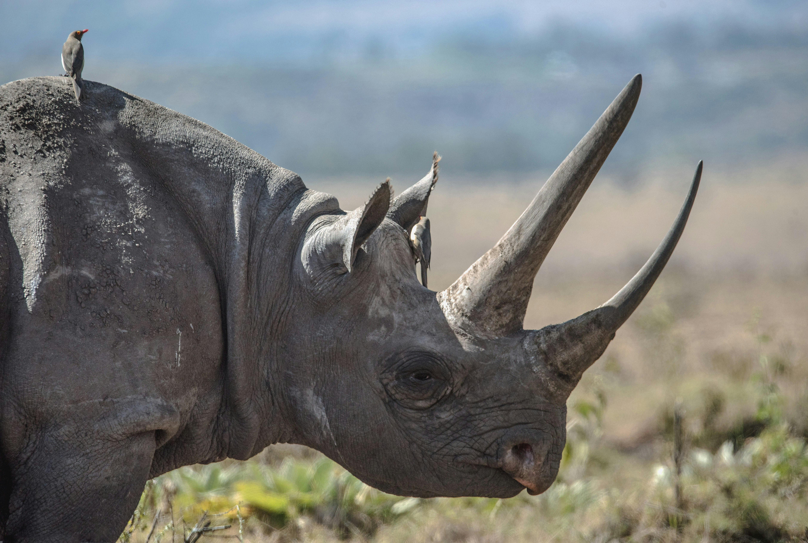

Manas National Park
Discover the untamed beauty of Manas National Park, a rare "triple crown" site that is a UNESCO World Heritage sanctuary, a Project Tiger reserve, and an Elephant reserve. Located at the foothills of the Bhutan-Himalayas, its dense evergreen forests and alluvial grasslands provide a critical habitat for endangered species found nowhere else, such as the Pygmy Hog and Golden Langur. The crystal-clear Manas River flows through the heart of the park, offering a spectacular backdrop for birdwatchers who come to spot over 450 species, including the elusive Bengal Florican.